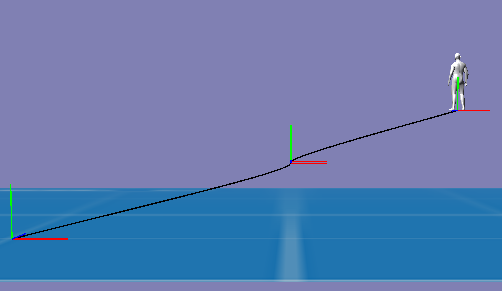

Well, it took some time in my case as i was destrated by so many other things.
The code is pretty raw, as I tried to break as little as possible of the present Spline API.
The actual Catmull Rom spline calculation behind
case VAR_VECTOR3:
return CalculateCatmullRomC(knots[originIndex].GetVector3(), knots[originIndex + 1].GetVector3(),
knots[originIndex + 2].GetVector3(), knots[originIndex + 3].GetVector3(), t, t2, t3);
is lent from https://stackoverflow.com/a/23980479/4599792 .
Only valid for Vector3 so far as I was too lazy…
The second factor of the exponent in
float dt0 = powf((p0-p1).LengthSquared(), 0.5f * 0.5f);
float dt1 = powf((p1-p2).LengthSquared(), 0.5f * 0.5f);
float dt2 = powf((p2-p3).LengthSquared(), 0.5f * 0.5f);
is actually the so called ‘alpha’ parameter of CatMull-Rom spline. You can change it continously from 0.0 (uniform case) over 0.5 (cetripetal case as shown here) and up to 1.0 (chordal case).
The project is organized as a Qt project:
https://github.com/sirop/Urho3d_CatmullRomCentripetal ,
Can be compiled the usual way as a Sample of Urho3D. To do this delete Qt *.pro file and follow Urho3D docs.
And a pic:

If you zoom into the region between P1 und P2 , you’ll see no cusps or loops.
Just the way it schould be with alpha=0.5 .